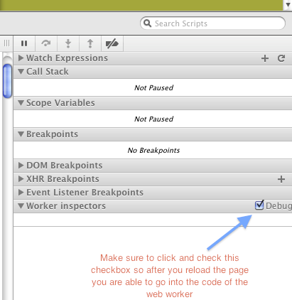

Quem sou eu?
·

Web app moderna
- "Offline First"
- Auto-contida e funcional
- Arquitetura "client side"
- Acesso a devices
- Rápida! (60fps)
Offline first - Por quê?
- Melhor desempenho
- Aeroporto, ilha deserta, naufrágio, ...
- Conexões instáveis (0G3G)
- Expectativa de disponibilidade de uma app:
sempre disponível
Offline first - Como?
- Recursos: AppCache
- Dados: localStorage, IndexedDB, File API.
- Desenvolvendo offline first:
- Assuma que não há conexão disponível!
- Implemente uma camada que
sincroniza com o servidor quando está online
-
navigator.onLine window.(ononline|onoffline)
- Working off the grid - HTML5Rocks

CSS adequado a Web Apps
Confirmado
Floats, Tables e Absolute position... OMG!!!!
- Floats são incontroláveis
- Tables não possuem semântica
- position: absolute dificulta "responsive design"
- CSS3 resolve com regions, exclusions, e flexible box.
2012: CSS3 para Web Apps (w3c)
Browser Support
CSS Regions
CSS Exclusions
CSS Flexbox (spec nova)
CSS dinâmico
Confirmado
calc()
.circle {
width: 300px;
height: 300px;
}
div {
display: ;
width: (100% - 4em);
height: (100% - 4em);
border-radius: 50%;
: center;
: center;
}
div:hover {
border-radius: 0;
}
Browser Support
CSS calc()
CSS Filter
Aplique efeitos e filtros a qualquer elemento DOM:
video, img {
: grayscale(0.5) blur(10px);
}
Leia mais em blog post.
CSS Custom Filters (CSS Shaders)
.cssshade:hover {
-webkit-filter: custom(url(shaders/vertex/crumple.vs)
mix(url(shaders/fragment/crumple.fs) multiply source-atop),
50 50 border-box,
transform perspective(1000) scale(1)
rotateX(0deg) rotateY(0deg) rotateZ(0deg),
amount 1, strength 0.4, lightIntensity 1);
}
JavaScript multithread
Confirmado
Web Workers
index.html
function startWorker(settings) {
var myWorker = new Worker('scripts/worker.js');
myWorker.addEventListener("message", workerListener, false);
myWorker.postMessage(settings);
}
Worker.js
self.addEventListener('message', function(e) {
doSomeWork();
}
function doSomeWork() {
importScripts('js/script1.js');
...
postMessage(result);
}
Web Worker - Debug

- if (Modernizr.webworkers)
- Shared Workers - Shared web workers allow any number of scripts to communicate with a single worker
- The book examples
Acessando um Filesystem
Confirmado
HTML5 Filesystem API
Persistência em arquivos/diretórios
Abrindo um filesystem:
window.( TEMPORARY, // PERSISTENT vs. TEMPORARY 1024 * 1024, // tamanho (bytes) requerido initFs, // callback de sucesso opt_errorHandler // callback de erro );
- Segurança: o FS é sandboxed
- Apps nativas acessam arquivos/diretórios... web apps também!
- Uso: cache dinâmico e controlado
Exemplo: Cache de arquivos remotos
var xhr = new XMLHttpRequest();
xhr.open('GET', '/path/to/image.png', true);
xhr.responseType = 'arraybuffer';
xhr.onload = function(e) {
};
xhr.send();
Exemplo: Cache de arquivos remotos
var xhr = new XMLHttpRequest();
xhr.open('GET', '/path/to/image.png', true);
xhr.responseType = 'arraybuffer';
xhr.onload = function(e) {
window.(TEMPORARY, 1024 * 1024, function(fs) {
}, onError);
};
xhr.send();
Exemplo: Cache de arquivos remotos
var xhr = new XMLHttpRequest();
xhr.open('GET', '/path/to/image.png', true);
xhr.responseType = 'arraybuffer';
xhr.onload = function(e) {
window.(TEMPORARY, 1024 * 1024, function(fs) {
fs.root.getFile('image.png', {create: true}, function(fileEntry) {
}, onError);
}, onError);
};
xhr.send();
Exemplo: Cache de arquivos remotos
var xhr = new XMLHttpRequest();
xhr.open('GET', '/path/to/image.png', true);
xhr.responseType = 'arraybuffer';
xhr.onload = function(e) {
window.(TEMPORARY, 1024 * 1024, function(fs) {
fs.root.getFile('image.png', {create: true}, function(fileEntry) {
fileEntry.createWriter(function(writer) {
writer.onwriteend = function(e) { ... };
writer.onerror = function(e) { ... };
writer.write(new Blob([xhr.response], {type: 'image/png'}));
}, onError);
}, onError);
}, onError);
};
xhr.send();
Usando arquivos do sandboxed FS
- Arquivos/diretórios recebem uma (
filesystem:) URL:
filesystem:http://example.com/temporary/image.png
- Uso em src/href:
var img = document.createElement('img');
img.src = fileEntry.toURL();
document.body.appendChild(img);
- Qual o
FileEntryde uma URLfilesystem:?
window.(img.src,
function(fileEntry) { ... });
Async alert: zilhões de callbacks!
var xhr = new XMLHttpRequest();
xhr.open('GET', '/path/to/image.png', true);
xhr.responseType = 'arraybuffer';
xhr.onload = function(e) {
window.(TEMPORARY, 1024 * 1024, function(fs) {
fs.root.getFile('image.png', {create: true}, function(fileEntry) {
fileEntry.createWriter(function(writer) {
writer.onwriteend = function(e) { ... };
writer.onerror = function(e) { ... };
writer.write(new Blob([xhr.response], {type: 'image/png'}));
}, onError);
}, onError);
}, onError);
};
xhr.send();
filer.js ( github.com/ebidel/filer.js )
Biblioteca que implementa comandos UNIX (ls, cp, mv)
var filer = new Filer();
filer.init({persistent: false, size: 1024 * 1024}, function(fs) {...}, onError);
filer.ls('path/to/some/dir/', function(entries) { ... }, onError);
filer.cp('file.txt', '/path/to/folder', 'newname.txt', function(entry) {
// entry.fullPath == '/path/to/folder/newname.txt'
}, onError);
var b = new Blob(['body { color: red; }'], {type: 'text/css'});
filer.write('styles.css', {data: b, type: b.type}, function(entry, writer) {
...
}, onError);
Demo: Filesystem Playground
Tudo bem, mas isso só funciona no Chrome, certo?
Browser Support
HTML5 Filesystem API + idb.filesystem.js shim!
Downloads sem servidor
Confirmado
Download client-side
Forçar downloads do servidor:
Content-Disposition: attachment; filename="MyLogo.png";
- Apps client-side precisam permitir download de dados gerados pela app.
Atributo download para fazer download de arquivos ao invés de navegar:
<a href="filesystem:http://example.com/temporary/image.png" download="image.png">download me</a>
Demo: Novel Generator
Exemplo: Download de conteúdo dinâmico
function downloadLink(name, content, mimetype) {
var a = document.createElement('a');
a.href = window.(
new Blob([content], {type: mimetype}));
a.download = name;
a.textContent = 'Download pronto';
document.body.appendChild(a);
}
downloadLink('MyNovel.txt',
document.querySelector('textarea').textContent,
'text/plain');
Acesso ao hardware
Confirmado
"Device APIs"
Device APIs WG: www.w3.org/2009/dap/
- Geolocation API
- Device Orientation API ( acelerômetro )
- WebGL ( GPU )
- HTML5 Filesystem API ( sandboxed filesystem )
navigator.onLine/navigator.connection( conectividade de rede )- Battery API
- Gamepad API
- WebRTC ( voice & video input ) / Web Audio API ( core audio )
Primeiro passo para apps comandadas por voz!
<input type="text" x-webkit-speech lang="pt_BR">
Segundo passo para apps comandadas por voz!!!!
Camera e Microfone
WebRTC: acesso à câmera e ao microfone sem plugins
navigator.({audio: true, video: true},
function(stream) {
var video = document.querySelector('video');
video.src = window.(stream);
}, function(e) {
console.log(e);
});
<video autoplay controls></video>
Demos
Gravando mídia
<input type="button" value="♦" onclick="record(this)">
<input type="button" value="◼" onclick="stop(this)">
var localMediaStream, recorder;
var record = function(button) {
recorder = localMediaStream.record();
};
var stop = function(button) {
localMediaStream.stop();
recorder.getRecordedData(function(blob) {
// Upload blob using XHR2.
});
};
Browser Support
getUserMedia()
<audio> "sexy"
Confirmado
Algumas demos BEM legais
Stream Multimidia
Confirmado
WebSockets binários
- WebSockets tinham as mesmas limitações que WebWorkers.
- Agora aceitam
File,Blob, ouArrayBuffer!
var socket = new WebSocket('ws://example.com/sock', ['dumby-protocol']);
socket.binaryType = 'blob'; // or 'arraybuffer'
socket.onopen = function(e) {
window.setInterval(function() {
if (socket.bufferedAmount == 0) {
socket.send(new Blob([blob1, blob2]));
}
}, 50); // executa a cada 50ms apenas
};
socket.onmessage = function(e) {
document.querySelector('img').src = (e.data);
};
Browser Support
Chrome Frame
Meta tag:
<meta http-equiv="X-UA-Compatible" content="IE=Edge,chrome=1">
Header:
X-UA-Compatible: IE=Edge,chrome=1
The End
Recap: Recursos de HTML5 que (talvez) você não conheça
Dúvidas?
< Obrigado! >